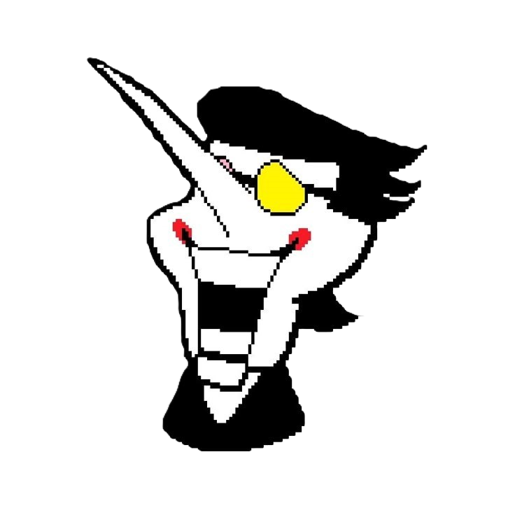

Хоч3шь узнать больше про меня?
[[Гиперссылка заблокированна]]
Тебе не стоит знать кто такой [[Майк]]

Спамтон
(англ. Spamton), полное имя — Спамтон Г. Спамтон (англ. Spamton G. Spamton) — тёмный из Кибермира. Впервые появляется в Кибергороде в качестве мини-босса. Также является одним из продавцов в главе 2.
В форме Спамтона НЕО является боссом с теневым кристаллом из данной главы. Кроме того, он выступает в качестве финального босса Странного пути. Как и Джевил, Спамтон НЕО отдаст игроку теневой кристалл и один из двух предметов после победы над собой.
Личность
В какой-то отрезок своей жизни Спамтон был прирождённым продавцом, всегда готовым заключить сделку. И хотя он по-прежнему сохраняет эти черты, его сделки приобрели бессмысленный и насильственный характер. Он утверждает, что стал продавцом не ради денег, а ради свободы заключать собственные сделки. Впрочем, он всё равно пытается обмануть Криса на деньги (которые он называет «кромерами») при любой возможности.
В большинстве диалогов Спамтон кажется отчаявшимся и психически нездоровым, по-видимому, проецируя себя на Криса, противореча себе и говоря бессмысленные вещи. Эта психическая нестабильность, похоже, ненадолго исчезает после боя с ним в его НЕО-форме, когда он желает героям успехов в путешествии без использования своих речевых причуд.
Речевые особенности
Речь Спамтона напоминает типичный запутанный спам-текст, значительная часть которого состоит из бессмысленных слов в квадратных скобках, которые могут указывать на некорректно применённые переменные слияния, гиперссылки или различные голосовые сбои.
Спамтон постоянно произносит слово generosity как genorisity, guarantee как guaranttee, а special как specil с единственным исключением для последнего в конце боя со Спамтоном НЕО после перерезания всех проводов.
Спамтон часто заменяет слова и части предложений словами и фразами из различных рекламных роликов, объявлений и других источников в интернете, заключёнными в одну или две квадратные скобки. Иногда это всего одно слово, но бывают и целые фразы. Порой он заменяет букву «е» на цифру «3», букву «s» — на цифру «5», а буквы «о» и «О» — на цифру «0». Иногда его речь подвергается цензуре и заменяется текстом «[Гиперссылка заблокирована]» или случайными символами. Периодически он обрывает себя на полуслове, оставляя большой пробел между последним произнесённым словом и следующим словом или знаком препинания, что схоже со Старуокером. Иногда он также начинает заикаться и несколько раз повторяет какую-либо короткую фразу.